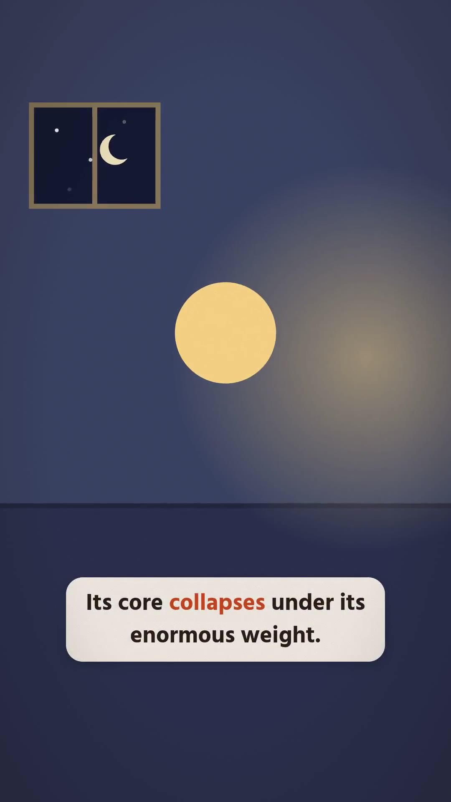
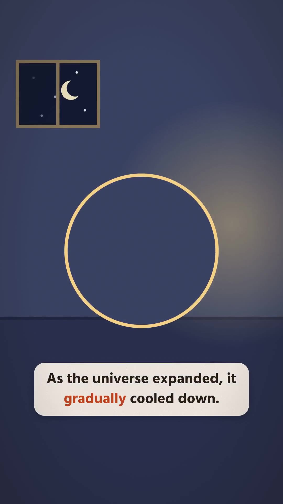
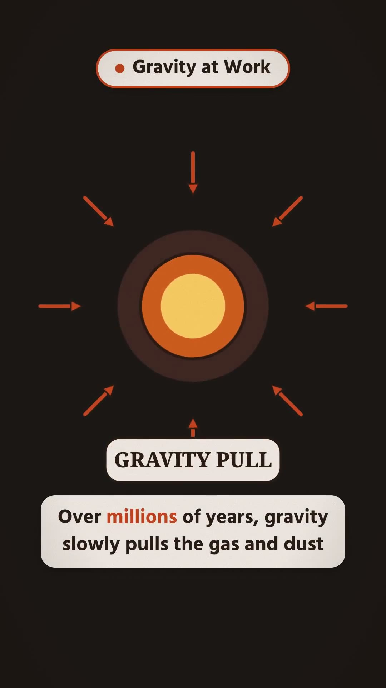
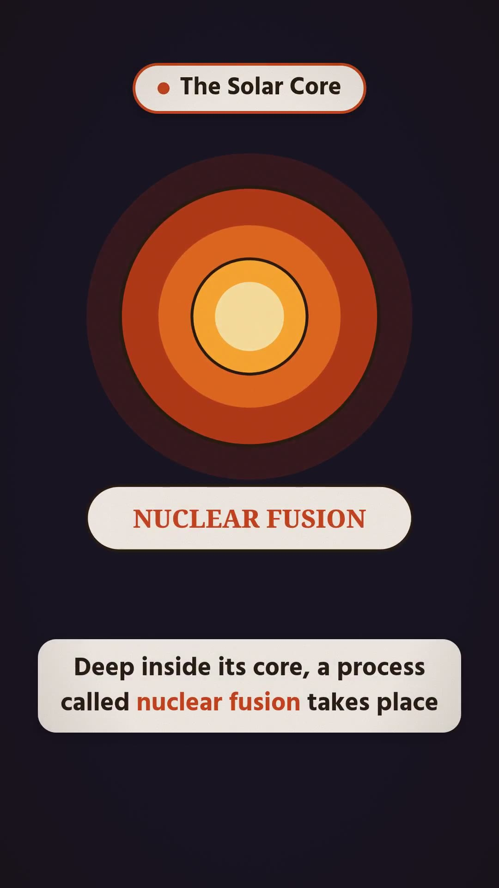

 What Is a Black Hole? What Is a Black Hole? The Mysterious Monster of the Universe 1:41 · 2026-11-20 · run #5 Download reel (11 MB) voicetimingsraw link
 The Big Bang Explained The Big Bang Explained: How Did the Universe Begin and How Did We Come Into Existence? 2:01 · 2026-11-20 · run #4 Download reel (12 MB) voicetimingsraw link
 How Stars Are Born in Deep Space How Are Stars Formed? The Birth of Stars in Space 1:01 · 2026-11-19 · run #3 Download reel (8 MB) voicetimingsraw link
 Why Is the Sun a Star? Why Is the Sun a Star? The Science Behind Our Solar System 1:03 · 2026-11-18 · run #2 Download reel (8 MB) voicetimingsraw link